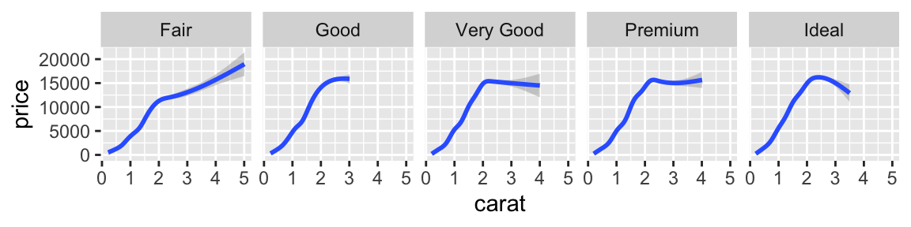

Note: This post was originally written by Radovan Miletic and copied here on April 18, 2022 - see the original post here for a potentially updated version.
Crumbs from a poor man’s table (of contents)
You may find the crumbs here: toc-styles.css and
the-toc-in-distill.Rmd. Hope they will be inspirational to
someone.
Judging by the {distill} issues 16, 341, 366, 420, and the Stack Overflow question it seems that there is a genuine need for some kind of a “floating TOC on the side” in {distill}.
In his comment, J.J. Allaire summarizes the problem:
- any change in {distill} should be linked to distll.pub web framework,
- floating TOC on the side would be tricky to implement due to specific
layout “figures that extend into the sidebar (quite common w/
distill)”.
An optimal solution can be found within Quarto publishing system. You may try scrolling up and down and observe the collapsible sidebar navigation. HTML documents rendered with Quarto use Bootstrap 5 by default, which is not the case with distill.pub.
While we wait for a solution, you may feel tempted to try “a poor
man’s TOC” that I came up with for my use case (applied to single
article).
Let me know how it goes!
Floating TOC in fixed position
YAML output
You may include a toc-styles.css file in the post
directory and add a reference to it in YAML output options:
css: toc-styles.css.
title: "Post title"
description: |
Description
author:
- first_name: "R"
last_name: "M"
output:
distill::distill_article:
toc: true
toc_depth: 6
toc_float: true
css: toc-styles.css
self_contained: falseCSS elements
If you want to place the TOC below the figures, you need to disable the z-index.
/* This hack is needed to temporary disable the predefined layout style */
d-article {
contain: none;
}
/* Sidebar Navigation */
#TOC {
opacity: 1;
position: fixed;
left: calc(7%);
top: calc(5.5%);
/* width: 20%; */
max-width: 260px;
max-height: 85%;
overflow-y: auto;
background: white; /* Optional, remove to enable the blur filter (just for fun). */
backdrop-filter: blur(10px); /* Optional, wouldn't not work with Firefox browser. */
padding: 10px; /* Optional */
/* border-right: 1px solid rgba(0, 0, 0, 0.1); */
border: 1px solid rgba(0, 0, 0, 0.1);
/* border-radius: 1px; */
transition: all 0.5s;
z-index: 999; /* Optional */
}
/* Hide the TOC when resized to mobile or tablet: 480px, 768px, 900px */
@media screen and (max-width: 1000px) {
#TOC {
position: relative;
left: 0;
top: 0;
max-width: none;
max-height: none;
overflow-y: auto;
border: none;
background: none; }
}Toggle (show/hide) button
CSS elements
You may disable the hover effect, if preferred.
.d-contents nav h3 {
text-indent: 25px;
}
#TOC.hide {
opacity: 0;
transition: visibility 0s linear 0.5s, opacity 0.5s;
}
/* Optional, remove to disable the hover effect */
#TOC:hover {
opacity: 1;
transition: all 0.5s;
}
/* Hide the TOC when resized to mobile or tablet: 480px, 768px, 900px */
@media screen and (max-width: 1000px) {
#TOC {
}
.d-contents nav h3 {
text-indent: 0; }
input[type="button" i] {
display: none; }
}JAVASCRIPT elements
function toggle () {
document.getElementById("TOC").classList.toggle("hide");
};HTML elements
<input type="button" class="d-article-with-toc" id="TOC" value="☰"
title="Toggle (Hide/Show) Table of Contents"
onclick="toggle()" style="padding:7px; border: 0px;"/>Scrolling Active States
It was Rich Pauloo (author of Stack Overflow question mentioned above) who pointed out to a scrolling active state implementation, “such that the TOC responds to the header the user is currently on”.
All credits for “scrolling active state” lightweight solution goes to Bramus Van Damme (see his tutorial) and Chris Coyier (his tutorial) and to the powerful IntersectionObserver.
I just made slight changes needed to track all headings that have an
id applied.
Please note that IntersectionObserver will only observe
changes in document’s viewport, in our case - headings currently being
displayed on the screen.
CSS elements
/* ScrollSpy active styles (see JAVASCRIPT tab for activation) */
.d-contents nav ul li.active > a {
font-weight: bold;
/* border-left: 1px solid #2780e3; */
color: #0f2e3d !important;
}
/* 💡 This small transition makes setting of the active state smooth */
.d-contents nav a {
transition: all 0.1s ease-in-out;
}JAVASCRIPT elements
window.addEventListener('DOMContentLoaded', () => {
const observer = new IntersectionObserver(entries => {
entries.forEach(entry => {
const id = entry.target.getAttribute('id');
if (entry.intersectionRatio > 0) {
document.querySelector(`[href="#${id}"]`).parentElement.classList.add('active');
} else {
document.querySelector(`[href="#${id}"]`).parentElement.classList.remove('active');
}
});
});
// Track all headings that have an `id` applied
document.querySelectorAll('h1[id], h2[id], h3[id], h4[id], h5[id], h6[id]').forEach((h1, h2, h3, h4, h5, h6) => {
observer.observe(h1, h2, h3, h4, h5, h6);
});
});Layouts
Default layout
l-body

Wider layouts
l-body-outset

l-page

Tables with Knitr kable
| mpg | cyl | disp | hp | drat | wt | qsec | vs | am | gear | carb | |
|---|---|---|---|---|---|---|---|---|---|---|---|
| Mazda RX4 | 21.0 | 6 | 160 | 110 | 3.90 | 2.620 | 16.46 | 0 | 1 | 4 | 4 |
| Mazda RX4 Wag | 21.0 | 6 | 160 | 110 | 3.90 | 2.875 | 17.02 | 0 | 1 | 4 | 4 |
| Datsun 710 | 22.8 | 4 | 108 | 93 | 3.85 | 2.320 | 18.61 | 1 | 1 | 4 | 1 |
| Hornet 4 Drive | 21.4 | 6 | 258 | 110 | 3.08 | 3.215 | 19.44 | 1 | 0 | 3 | 1 |
| Hornet Sportabout | 18.7 | 8 | 360 | 175 | 3.15 | 3.440 | 17.02 | 0 | 0 | 3 | 2 |
| Valiant | 18.1 | 6 | 225 | 105 | 2.76 | 3.460 | 20.22 | 1 | 0 | 3 | 1 |
Paged tables
Full screen layout
l-screen-inset shaded
l-screen-inset
l-screen
Heading h1
Heading h2
Heading h3
Heading h4
Heading h5
Heading h6